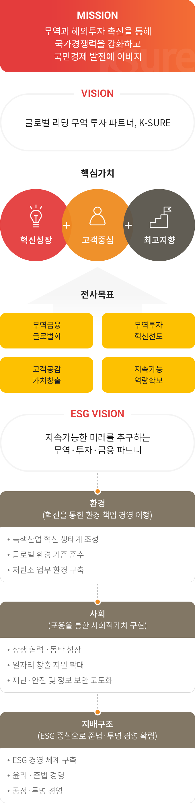
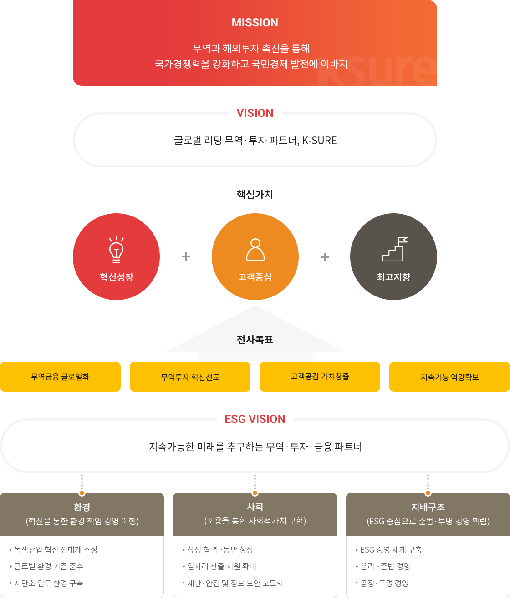

ESG 추진 전략
ESG 추진 전략
K-SURE는 ESG 경영체계
실현이라는 전사 목표 달성을 위해
기존의 사회적가치구현 체계를 기반으로
ESG 추진 전략을 수립하였습니다.
"지속가능한 미래를 추구하는 무역·투자·금융 파트너" 를 비전으로 하는 ESG 추진 전략은 기후변화, 코로나19 등 급변하는 대내외 정책 환경과 지배구조 개선 방향을 고려하여 도출하였습니다.
아울러 환경 책임 경영의 이행, 사회적가치의 구현, 준법 투명 경영구조 확립을 3대 전략방향으로 삼아 ESG 각 영역을 균형 있게 실천하기 위한 9개의 세부 목표를 추진하고 있습니다.


MISSION
무역과 해외투자 촉진을 통해 국가경쟁력을 강화하고 국민경제 발전에 이바지
VISION
국민과 고객에게 신뢰받는 무역 · 투자 · 금융 안전망
핵심가치
- 고객
- 혁신
- 포용과 상생
전사목표
- 포스트 코로나 무역 · 투자 선도
- 수출 中企 혁신성장 견인
- 지속경영 역량 강화
- ESG 경영체계 실현
ESG VISION
지속가능한 미래를 추구하는 무역 · 투자 · 금융 파트너
-
환경
(혁신을 통한 환경 책임 경영 이행)
- 녹색산업 혁신 생태계 조성
- 글로벌 환경 기준 준수
- 저탄소 업무 환경 구축
-
사회
(포용을 통한 사회적가치 구현)
- 상생 협력 ·동반 성장
- 일자리 창출 지원 확대
- 재난·안전 및 정보 보안 고도화
-
지배구조
(ESG 중심으로 준법·투명 경영 확림)
- ESG 경영 체계 구축
- 윤리 ·준법 경영
- 공정·투명 경영